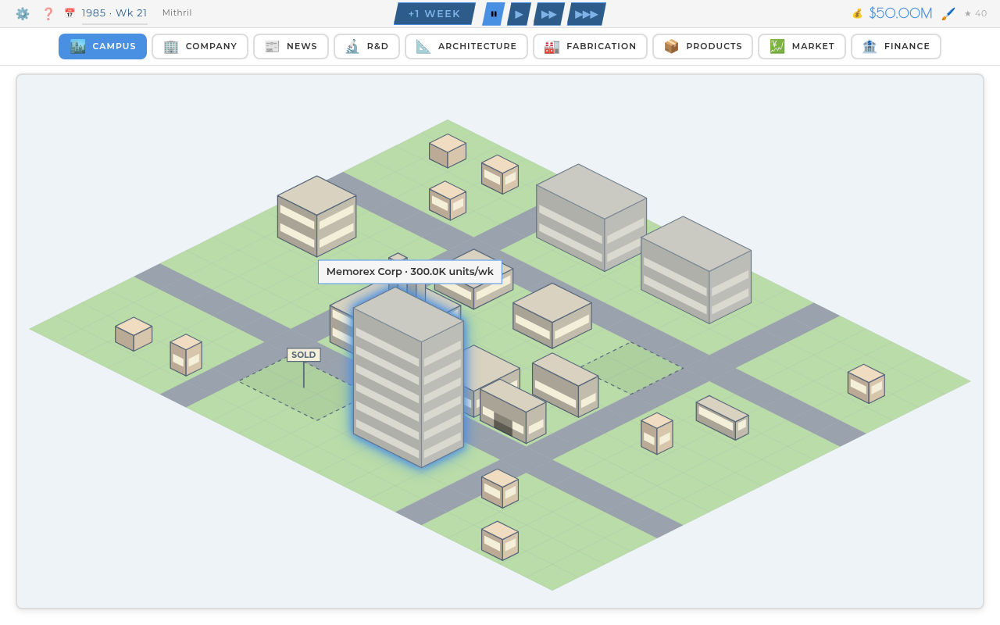
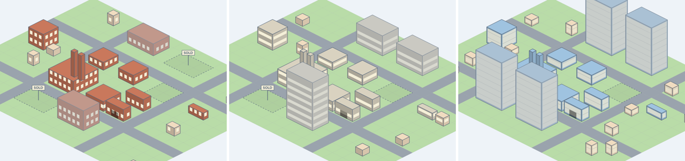
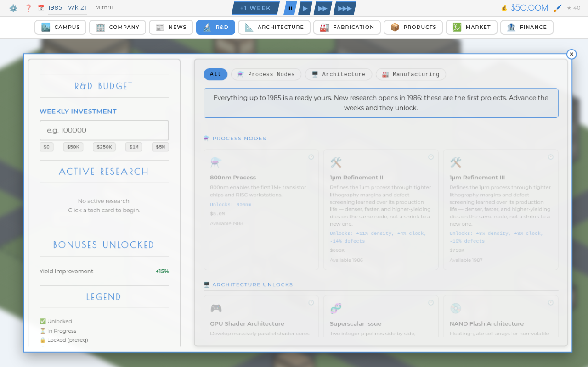
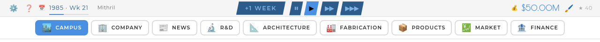
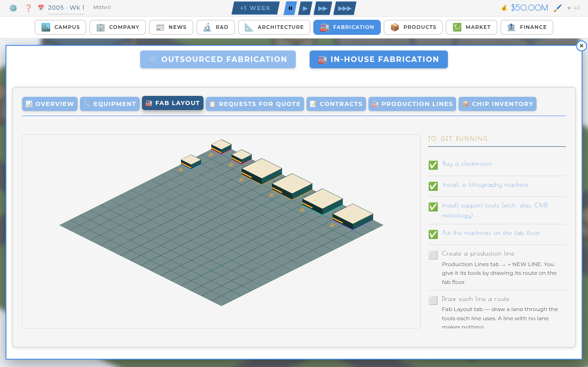

Devlog · 28 Sep 2026
Silicon Tycoon 0.51: your company is a place now
The last devlog was back in August. Since then there have been six releases, 0.46 through 0.51, and they add up to a different game. It has sound now. You lay out your own fab floor. And as of today your company is a little town you can look at instead of a stack of menus.
Here is what changed.
Your company has a campus

Load a company and you now land on the campus, an isometric view of your firm sitting on an industrial park, with your four rivals across the road and a town around the edges.
Nothing on it is decoration you have to maintain. Every building comes from something you did. Your HQ starts in a garage and moves into offices, then an HQ block, then a tower as your valuation climbs. The R&D lab goes up when you start your first research project. Buy a cleanroom and the fab stops being a construction site with a crane on it. Sign a foundry contract and a receiving dock opens. Each business model only gets the buildings it actually uses, so a foundry has no design studio and an IP licensor never builds a warehouse.
Empty plots are the part I like most. Hover the empty R&D plot and it says "Start a research project to open a lab". Click it and you are in R&D. For a new player that is a to-do list you can see.
The rivals are live too. A rival's lot is empty with a SOLD sign until its first product ships, then holds a building sized by how much it sells each week. If one goes bankrupt, its building gets boarded up.

Everything follows the decades. The campus is brick before 1980, concrete until 1995 and glass after that, yours and the rivals' and the town's alike. Start in 2015 and it looks like 2015.
Screens open as windows over it

Click a building and its screen grows out of it as a window, with the campus still there around the edges. Close it with the ✕, Esc, or a click on the campus, and it shrinks back into the building it came from. Moving between screens keeps the window still and swaps what is inside, so you are not watching animations all day.
If you have reduced motion switched on in your system settings, it is a quick fade instead.
Time runs by itself

The +4 WEEKS button is gone. In its place is pause, 1×, 2× and 4×. At 1× a week takes ten seconds, so a year is about nine minutes. Space pauses and resumes, and 1, 2 and 3 pick a speed. +1 WEEK is still there for when you want to step.
Time waits for you. It holds while a dialog is open, while you are typing a price, while you drag something around, and while the window is in the background. It also stops by itself when something needs a decision: your balance goes negative, the bankruptcy warning lands, a research project finishes. The pause button tells you which.
You lay out your own fab (0.47 to 0.50)

This was the big one before today. Your fab has a floor plan now, and it is the only thing that decides your capacity.
Machines take up the space their real versions do. One tile is two metres, so a 1971 mask aligner is a single tile and an EUV scanner is five by three. Each process node has a recipe for how many passes a wafer makes through each kind of tool, from six mask layers at 10µm to seventy-six at 5nm, and your fab runs at the speed of its slowest module. A bottleneck panel names that module and says what one more tool of that type would actually add.
Production lines are lanes you draw across the floor, past the tools each line uses. Tools have a load port on one face, so rotating a machine decides which aisle can serve it. Transport comes in four tiers you research and pay to lay down: hand-carried, carts, conveyor and overhead rail. Better handling moves wafers faster and cuts contamination, and a sprawling lane on hand-carrying is slow.
The game has sound (0.46)
Clicks, tabs and dialogs answer back. Separate cues fire for the things you would otherwise have to go and read: a contract done, a batch delivered, a rival launching against you, money trouble. Underneath there is an ambient bed that changes with the era and darkens when the company is in trouble. It is all synthesized as you play, so the download did not grow. Volume sliders are in Settings.
Smaller things
- Nine more moments of 1970s history, among them the erasable PROM, the HP-35, the 6502, the Z80, the 8086, the 1973 oil embargo and HP's 1980 study that found Japanese memory chips failing far less often. The 4004 now arrives in November 1971, when it actually shipped.
- Chippy has tips on every screen again. Several screens had lost theirs when I merged pages, and a new foundry's very first screen had nothing useful to say.
- Picking a business model tells you what you will spend your time doing, and fabless is marked as a good first game.
- R&D explains an empty start instead of showing you a wall of greyed-out cards.
- Finance shows your weekly burn and the head-office overhead behind it.
- Switching screens no longer flashes an unstyled page first.
- Two 2023 market events, the NPU surge and the post-shortage CPU glut, never fired before. They do now.
- A long list of layout fixes: scrollbars fighting each other, panels painting black slabs on light themes, a die designer wider than a 1440px window.
What's next
The campus is still quiet. Next up is making it move: trucks leaving the warehouse with the week's shipments, wafers going into the fab, money popping up over the buildings that earned it, all driven by what actually happened that week. After that, a couple of screens get the full treatment, like the die designer as a blueprint table.
If something feels off, or you get stuck in the first few minutes, tell me in the comments. That is the part of the game I most want to get right.